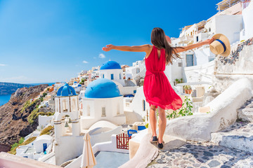
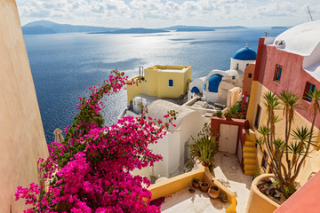
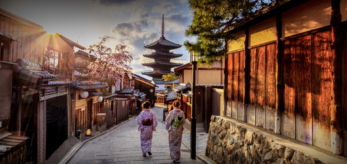
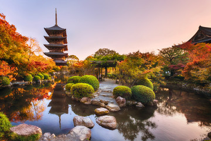
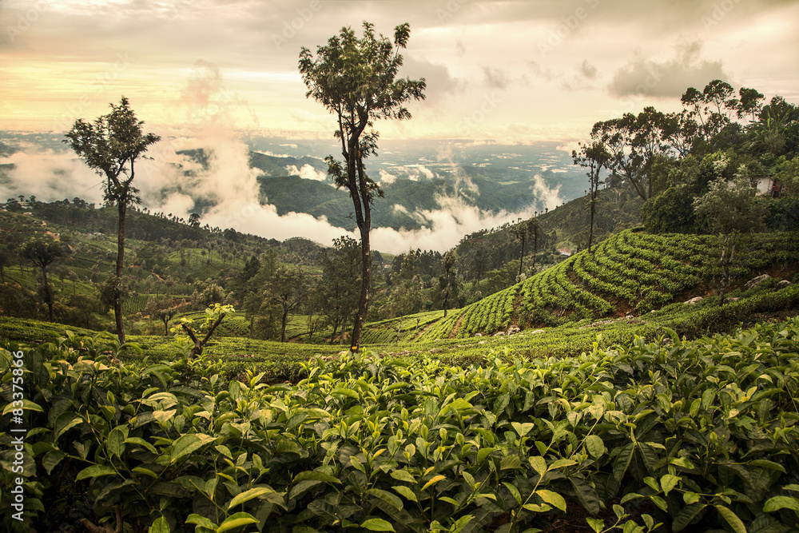
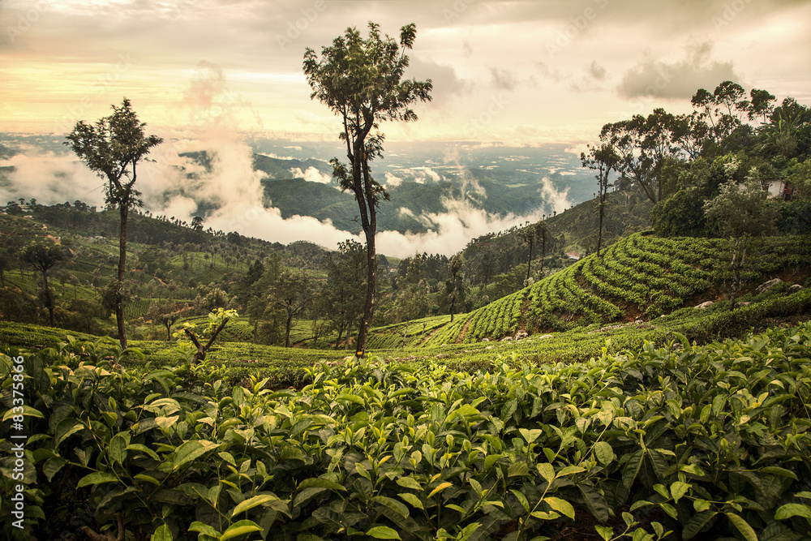

Des lieux à voir, des rues à explorer et des expériences emblématiques à Bali.
Kelingking Beach
Kelingking Beach, c’est le top 1 des lieux les plus connus de Nusa Penida. C’est la photo que les
grands sites de voyage utilisent pour inciter les touristes à venir ou à revenir à Bali. Et même des fois pour illustrer les plus beaux lieux
à voir en Indonésie.
Jatiluwih Green Land
Jatiluwih Green Land, un site classé au patrimoine mondial de l'Unesco, où vous pourrez flâner
dans l'épaisse forêt tropicale. La visite se terminera par le temple d'Ulun Danu Beratan, célèbre temple hindou balinais et
l'attraction touristique la plus photographiée de Bali
Ulun Danu Bratan Temple
Le site est connu comme très photogénique avec le temple submergé par le lac.
Par contre, si vous visiter ce temple pendant la saison sèche, de grandes chances qu’il ne soit pas submergé, ce qui
pour le coup enlève beaucoup de son charme
Hôtels à Bali et autres hébergements
The Stone Hotel
Découvrez pourquoi le The Stones Hotel - Legian Bali, Autograph Collection est l'hôtel préféré des voyageurs visitant Legian. Mélange idéal entre rapport qualité/prix et confort, il offre un cadre de luxe avec une gamme de services conçus pour les voyageurs comme vous.
Como Hotel
Tout le monde a besoin d'un cocon douillet où se reposer. Le COMO Shambhala Estate, Bali est l'établissement parfait pour les voyageurs souhaitant se ressourcer lors de leur séjour à Payangan..
Six Senses Hotel
Vous êtes à la recherche d'un cadre de luxe et d'une gamme de services conçus pour sublimer votre séjour à Uluwatu ? Alors le Six Senses Uluwatu Bali vous apportera entière satisfaction.
Des lieux à voir, des rues à explorer et des expériences emblématiques à Paris.
Tour Eiffel
La Tour Eiffel est un des symboles de Paris. Prenez un billet coupe-file et montez pour une vue superbe,
y compris en nuit. Chaque étage a un restaurant et des attractions telles que des expériences pour enfants ou les appartements
privés de Gustave Eiffel, ainsi qu’un bar à champagne au sommet..
Arc de Triomphe
L'Arc de Triomphe, à la place de l'Etoile, est parmi les sites parisiens les plus iconiques et sert comme
monument aux victoires napoléoniennes. Montez-le pour une vue sur les Champs-Elysées et Paris, ou venez à 18h30 pour voir
l’allumage quotidien de la flamme de la Tombe du Soldat Inconnu
Musee du Louvre
Avec une réputation mondiale, le musée du Louvre abrite des chefs-d'œuvre tels que la Mona Lisa,
la Vénus de Milo, la Victoire de Samothrace, et bien plus. Les merveilles de l’Egypte antique, de la peinture et de l’art
décoratif se présentent. Achetez un billet coupe-file—une visite guidée est aussi recommandée
Hôtels à Paris et autres hébergements
Novotel Paris les halles
Tout le monde a besoin d'un cocon douillet où se reposer. Le Novotel Paris Les Halles est l'établissement
parfait pour les voyageurs souhaitant se ressourcer lors de leur séjour à Paris. Réputé pour son cadre familial et sa proximité de
grands restaurants et attractions, le Novotel Paris Les Halles vous permet de profiter pleinement de ce que Paris a de mieux à offrir.
The Hoxton Paris
Vous cherchez un endroit où séjourner à Paris ? Voilà ce qu’il vous faut : le The Hoxton, un hôtel familial qui
vous apporte le meilleur de Paris à votre portée.
Équipées d'une télévision à écran plat et d'une climatisation, les chambres du The Hoxton, Paris offrent tout le confort dont vous avez
besoin. Vous pourrez même rester connecté grâce au wi-fi gratuit.
Passy Eiffel Hotel
Vous cherchez un endroit où séjourner à Paris ? Voilà ce qu’il vous faut : l'Hotel Passy Eiffel, un hôtel romantique
qui vous apporte le meilleur de Paris à votre portée.
Le wi-fi gratuit est offert aux clients et les chambres du Passy Eiffel Hotel sont dotées d'une télévision à écran plat, d'une
climatisation et d'un minibar.


3) Santorini
Au coucher du soleil, cette île enchanteresse revêt ses plus belles couleurs
Même si vous n'êtes jamais allé sur cette île des Cyclades au cœur de la mer Égée, vous la reconnaîtrez au premier coup d'œil entre les maisons colorées taillées à même la roche, les eaux à l'éclat de saphir, et les bâtiments d'un blanc immaculé aux toits bleu cobalt. Errez sur les incroyables plages de sable noir ou dans les rues des petits villages pittoresques comme Imerovigli. La belle Oia est mondialement connue pour ses couchers de soleil aux nuances chatoyantes.
Des lieux à voir, des rues à explorer et des expériences emblématiques à Sintorini.
Amoudi Bay
La baie Amoudi, à 300 marches au bas du village d’Oia, est un petit port sympathique pendant la journée qui devient magique à la tombée de la nuit. Pour voir le coucher du soleil sur la mer scintillante, tous les restaurants du port, qui proposent des plats locaux, seront parfaits..
Perissa Black Sand Beach
La plage de sable noir de Perissa est très populaire pour ses eaux calmes et sa vie sous-marine. Faites de la plongée avec masque et tuba, le parachute ascensionnel, ou le jet-ski. Profitez du vent pour apprendre à faire de la planche à voile. Un parc aquatique amusera les enfants.
Hiking -Trail-Firaoia
Pour de superbes vues de Santorin, du volcan, des baies, et la caldera, faites la randonnée de Fira. Commençant à Fira, passez par les villages de Firostefani et Imerovigli avant d’arriver à Oia. Le temps de marche—deux heures et demie, mais comptez beaucoup plus pour pouvoir admirer le chemin pleinement.
Hôtels à Santorini et autres hébergements :Un mélange de charme, de symboles et de modernité.
Andoronis Concept
Tout le monde a besoin d'un cocon douillet où se reposer. L'Andronis Concept est l'établissement parfait pour les voyageurs souhaitant se ressourcer lors de leur séjour à Imerovigli. Réputé pour son cadre romantique et sa proximité de grands restaurants, l'Andronis Concept vous permet de profiter pleinement de ce que Imerovigli a de mieux à offrir.
Grace Hotel Santorini, Auberge Resorts Collection
Vous êtes à la recherche d'un cadre romantique et d'une gamme de services conçus pour sublimer votre séjour à Imerovigli ? Alors la Grace Hotel Santorini, Auberge Resorts Collection vous apportera entière satisfaction.
Les chambres de la Grace Hotel Santorini, Auberge Resorts Collection sont équipées d'une télévision à écran plat, d'un minibar et d'une climatisation. Pour encore plus de commodité, elles disposent même d'un wi-fi gratuit.
Astro Palace Hotel & Suites
Grâce à son emplacement tout près des monuments populaires, comme Orthodox Metropolitan Cathedral (0,5 km) et Cathedral Church Of Candlemas Of The Lord (0,6 km), les clients de l'Astro Palace Hotel pourront facilement profiter des attractions les plus célèbres de Fira.


4) Kyoto
Un portail vers le passé du Japon, empli de sites inscrits au patrimoine mondial et d'arts traditionnels
Les lieux saints et les temples de Kyoto forment un pont inhabituel entre la modernité de la ville et son passé ancestral. Le sanctuaire de Shimogamo date du VIe siècle et il semble avoir été arrêté dans le temps ; on ressent encore le calme et l'énergie spirituelle qu'il dégage. Visitez le sanctuaire Fushimi Inari, puis inclinez-vous devant les 1000 statues grandeur nature du Sanjūsangen-dō. Assistez aux danses traditionnelles des geishas, puis savourez tranquillement un bon repas dans un restaurant surplombant la rivière Kamo (littéralement, la rivière aux canards).
Des lieux à voir, des rues à explorer et des expériences emblématiques à Sintorini.
Fushimi Inari-taisha
Fushimi Inari Taisha est le plus grand sanctuaire shinto du Japon situé au sud de Kyoto. Erigé en 711, il est dédié à la déesse du riz Inari et plus largement à la richesse. La beauté de ce complexe se dévoile au gré d'une randonnée pédestre le long d'une vallée, balisée par des milliers de portiques vermillon appelés torii.
Gio-ji Temple
Temple Gio-ji est un temple calme entouré d'arbres et d'un luxuriant jardin de mousse. Les arbres poussent assez densément et le temple est souvent recouvert d'une ombre profonde. À l'intérieur du temple, cependant, se trouve une statue de Dainichi Nyorai, le Bouddha de la Lumière. D'autres statues sont liées à la place du temple dans l'histoire et la littérature japonaise.
Temple du Pavillon d’or (Kinkaku-ji)
Le temple bouddhiste de Kinkaku-ji est certainement l'endroit le plus visité de Kyoto. Situé dans le nord-ouest de la ville, son nom officiel est Rokuon-ji, il s’est fait connaitre pour ses deux étages entièrement recouverts de feuilles d’or. C'est pour cela qu'on l'appelle généralement le temple du Pavillon d’Or.
Hôtels à Santorini et autres hébergements :Un mélange de charme, de symboles et de modernité.
The Ritz-Carlton kyoto
Bienvenue au The Ritz-Carlton, Kyoto, votre second chez vous à Nakagyo. Le The Ritz-Carlton, Kyoto met tout en œuvre pour rendre votre séjour aussi agréable et relaxant que possible. C'est la raison pour laquelle autant de clients reviennent chaque année.
Hotel Kanra Kyoto
Excellent choix pour les voyageurs visitant Kyoto, l'Hotel Kanra Kyoto offre un cadre de luxe et de nombreux services conçus pour sublimer votre séjour.
Avec ses chambres équipées d'une télévision à écran plat, d'une climatisation et d'un réfrigérateur, l'hôtel deviendra rapidement votre second chez vous. De plus, l'hôtel offre un wi-fi gratuit.
Shimaure
Si vous recherchez un ryokan de luxe à Kyoto, alors le Shiraume est le choix idéal.
Situés à quelques pas des monuments les plus populaires de Kyoto, comme Kodai-ji Temple (0,9 km) et Eikan-dō (2,2 km), le Shiraume Hotel est une destination de choix pour les touristes.
 
